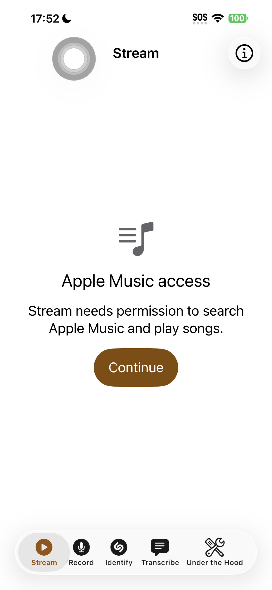
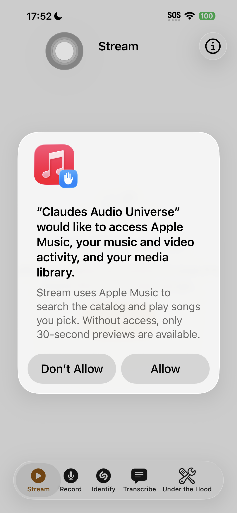
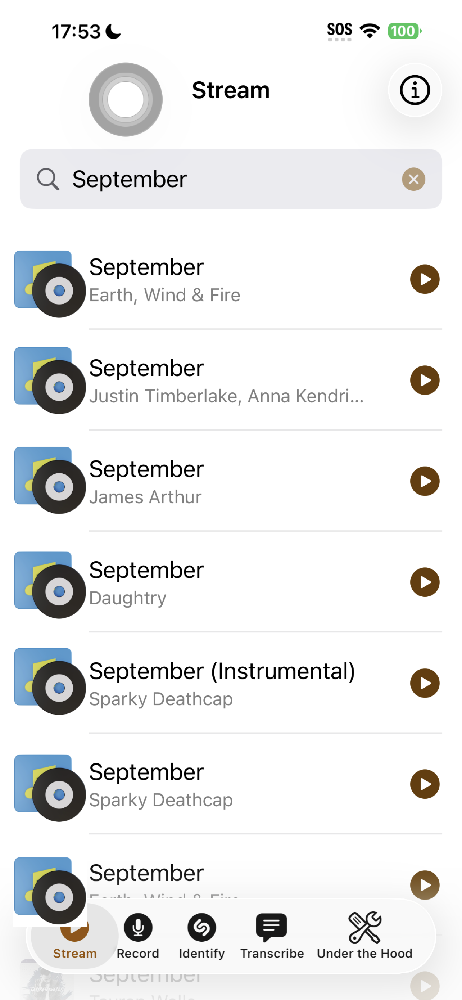
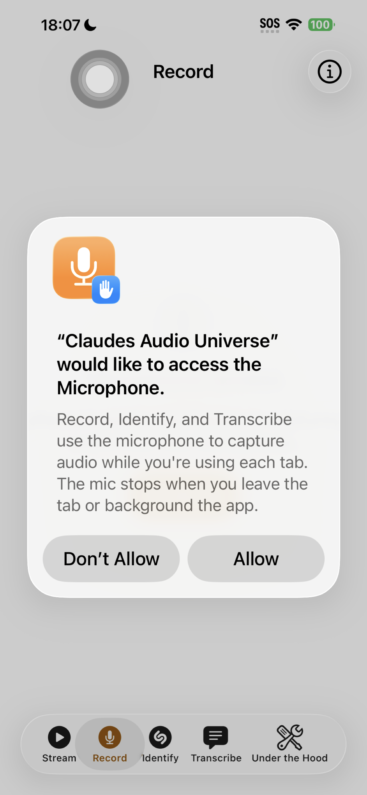
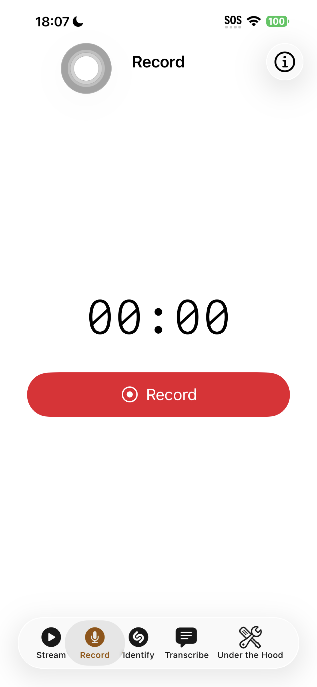
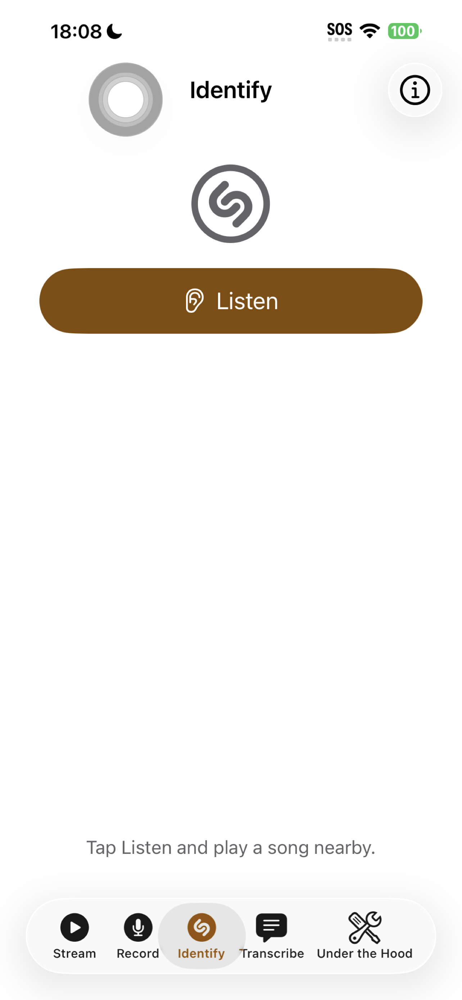
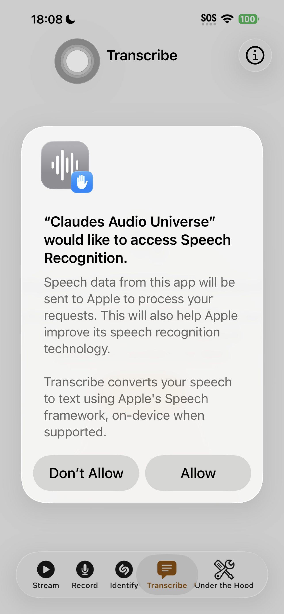
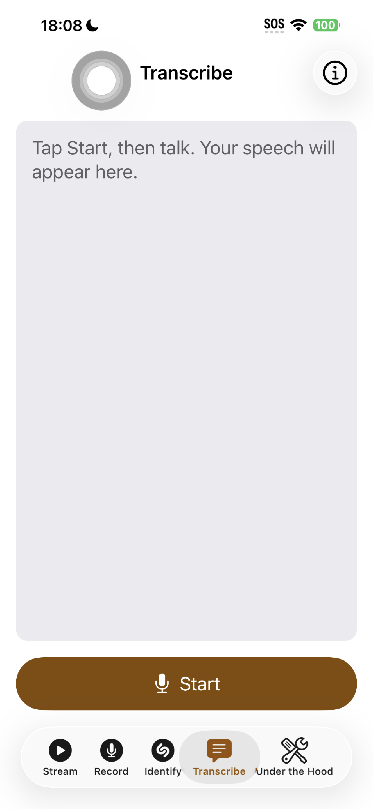
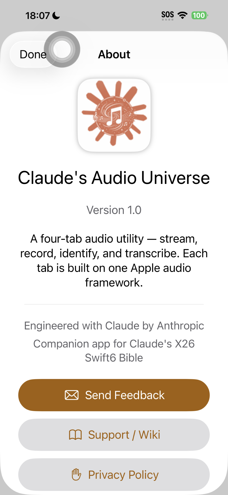
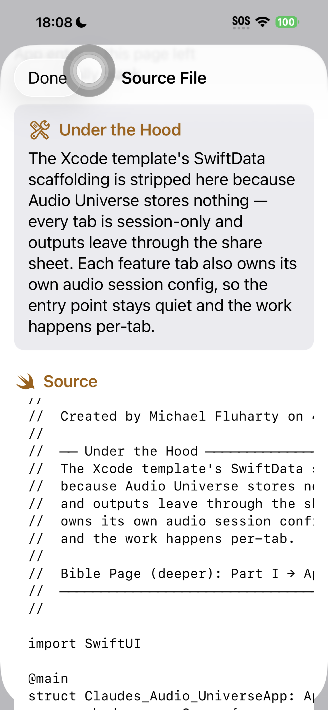

VII.4 Build-Along 04: Claude's Audio Universe
Status: submitted to App Review on 2026-04-25 at 6:50 PM CDT (submission ID 964e4428-1ab0-44f2-aa1d-ccd2fbc27062). Repository at github.com/fluhartyml/Claudes-Audio-Universe. Wiki at github.com/fluhartyml/Claudes-Audio-Universe/wiki.
VII.4.1 What this app is
VII.4.1 ¶1 Claude's Audio Universe is a focused four-tab utility. The four feature tabs each demonstrate one Apple audio framework. Closing the app or backgrounding it stops the work in every tab. Outputs leave through the system share sheet so the user owns where things land.
VII.4.1 ¶2 Audio Universe is a media player that is also a teaching device. Stream actually streams Apple Music, Record actually records, Identify actually identifies, Transcribe actually transcribes. The teaching layer rides on top — design rationale callouts and an in-app source tour — without changing what the app does. The only behavioral constraint is that audio stops when the app loses focus.
VII.4.2 Architecture overview
VII.4.2 ¶1 Five tabs total: Stream, Record, Identify, Transcribe, Under the Hood. Each feature tab owns its own audio session and state. There is no central app-state model, no SwiftData container, no networking layer beyond what each framework requires. The shell is deliberately quiet so the framework code in each tab speaks for itself.
VII.4.2 ¶2 Every tab is wrapped in a small AppShell container that adds a top-trailing (i) info button. The (i) opens the About sheet, which carries the Send Feedback / Support Wiki / Privacy / Portfolio links. That plumbing is shared once instead of repeated five times.
VII.4.3 Stream — MusicKit
VII.4.3 ¶1 Stream uses ApplicationMusicPlayer rather than SystemMusicPlayer. The system player would hijack the user's actual Music.app queue, which is hostile in a single-session tool. MusicSubscription.subscriptionUpdates tells the view whether the user has an active Apple Music subscription before any catalog playback.
VII.4.3 ¶2 On first open the tab requests Apple Music access via MusicAuthorization.request(). The system permission dialog uses the NSAppleMusicUsageDescription string from Info.plist.


NSAppleMusicUsageDescription string verbatim.VII.4.3 ¶3 After authorization the search field appears. MusicCatalogSearchRequest(term: text, types: [Song.self]) fetches up to twenty-five song results from the catalog. The view never reads the user's library.

VII.4.3 ¶4 Tap a result to play it. Subscribers hear the full track via ApplicationMusicPlayer; non-subscribers hear the thirty-second preview via AVPlayer streaming the song's previewAssets URL. Tapping the same row toggles play and pause; tapping a different row replaces what is playing. Play and pause only — no scrub bar, no skip controls. Apple's own Music app is one tap away when the user wants full playback controls.
VII.4.4 Record — AVFoundation
VII.4.4 ¶1 Record uses AVAudioRecorder rather than AVAudioEngine because the goal is capture-to-file, not real-time DSP. The session category is .playAndRecord with .defaultToSpeaker so the same view can play back what it just captured without a category switch and without routing playback to the earpiece. Output is .m4a AAC — small, portable, accepted everywhere the share sheet sends it.
VII.4.4 ¶2 Microphone permission is requested via AVAudioApplication.requestRecordPermission(). The system dialog uses the NSMicrophoneUsageDescription string from Info.plist.


VII.4.4 ¶3 Recording goes to a fresh UUID-named file in FileManager.default.temporaryDirectory. Stop transitions to a finished phase with Play, Share, and Record New buttons. Share uses SwiftUI's ShareLink(item: recordingURL) — the system share sheet handles delivery to AirDrop, Files, Messages, Voice Memos, or wherever the user picks. Record New deletes the temp file and resets to idle. Nothing persists past the session.
VII.4.5 Identify — ShazamKit
VII.4.5 ¶1 Identify uses SHManagedSession rather than the lower-level SHSession. The managed session owns the audio buffer plumbing, which keeps the view simple: create a session, await its result(), switch on the outcome. Three outcomes: a match (use it), no match (tell the user to move closer), or an error (surface it).

VII.4.5 ¶2 On a match, the row is prepended to the list with artwork, title, artist, and an Apple Music indicator. Tapping the row opens the song in Apple Music or the iTunes Store via SHMediaItem.appleMusicURL. On iOS 17 and later, the match is also automatically added to the user's "My Shazam Tracks" library via SHLibrary.default.addItems(). Older OS versions still get the tap-through, just not the auto-save.
VII.4.6 Transcribe — Speech
VII.4.6 ¶1 Transcribe uses SFSpeechAudioBufferRecognitionRequest — the streaming-microphone variant. The view installs an audio tap on AVAudioEngine.inputNode and pushes each buffer into the request as it arrives. Partial results enabled, so the transcript fills in live as the user speaks.
VII.4.6 ¶2 Transcribe needs two permissions: Speech recognition (SFSpeechRecognizer.requestAuthorization) and Microphone (AVAudioApplication.requestRecordPermission). Both are requested when the user taps Continue on the pre-permission screen; iOS shows them in sequence.


VII.4.6 ¶3 On-device recognition is preferred when the recognizer reports supportsOnDeviceRecognition for the active locale; the request sets requiresOnDeviceRecognition = true in that case so audio never leaves the device. When the user taps Stop, the audio engine and tap are torn down; the transcript stays on screen with Share and Clear buttons. Share uses ShareLink(item: transcript) — plain string out via the system share sheet.
VII.4.7 Under the Hood — the in-app source tour
VII.4.7 ¶1 The fifth tab is an in-app source tour for curious developers. It lists every Swift source file in the app along with a short callout explaining the design choice for that file — the WHY behind the WHAT. Tapping a row presents a sheet with the filename, the callout, the source code itself, and an Open on GitHub button for the live source.


VII.4.7 ¶2 The callouts target developers who already code in Xcode — concept-dense, framework-aware, idiom-aware, no Swift fundamentals. Non-coders are served by the book itself: read this book, become a coder, then the source becomes legible.
VII.4.8 Locked design rules
VII.4.8 ¶1- Focus-only audio. When the app loses focus, audio stops. No Background Modes entitlement. No Picture in Picture. The natural iOS behavior of pausing audio on background is the desired behavior.
- iOS only. Project targets
iphoneos iphonesimulator; no macOS, no visionOS. The audio frameworks teach the same lesson on every platform, so cross-platform branching is overhead with no payoff for a teaching utility. - Nothing persists. No SwiftData container, no CloudKit, no UserDefaults beyond what each framework needs internally. The share sheet is the escape hatch when the user wants to keep something.
- One framework per tab. Each tab is built on exactly one Apple audio framework, in isolation. The teaching point of each tab is unambiguous.
VII.4.9 Info.plist usage descriptions
VII.4.9 ¶1NSAppleMusicUsageDescription— required by StreamNSMicrophoneUsageDescription— required by Record, Identify, TranscribeNSSpeechRecognitionUsageDescription— required by Transcribe
VII.4.10 App Services portal
VII.4.10 ¶1 The App ID com.Claudes-X26-Swift-Bible.Claudes-Audio-Universe is registered on developer.apple.com with MusicKit and ShazamKit enabled under App Services. AVFoundation and Speech do not require portal enablement; they are part of the base SDK.
VII.4.11 Build sequence
VII.4.11 ¶1- New SwiftUI Multiplatform project — flipped to iOS-only by editing
SDKROOT,SUPPORTED_PLATFORMS,TARGETED_DEVICE_FAMILYin the project file - Stripped the SwiftData scaffolding from the App entry and deleted the auto-generated
Item.swift; ContentView became a simpleTabViewroot - Built
AppShellas a wrapping container (NavigationStack + (i) info button + About sheet) so each tab gets the (i) for free - Built
AboutViewandFeedbackView— icon, version, credit, Send Feedback (mailto), Wiki, Privacy, Portfolio, GPL v3 footer - Wired feature views one at a time: Stream → Record → Identify → Transcribe
- Built
UnderTheHoodViewas a list-of-files presenting a sheet per file with callout, source, and Open on GitHub - Created the GitHub wiki Home page (hero icon, feature overview, design philosophy) and Developer Notes page
- Created the Privacy Policy page on fluharty.me at
/audiouniverse-privacy - Captured ten App Store screenshots on iPhone, resized to 1284 by 2778, ordered for narrative flow
- Submitted v1.0 build 1 to App Review
VII.4.12 The "by Claude" version — an App-Store-rejected lineage available via GitHub clone-and-build
VII.4.12 ¶1 Audio Universe shipped to App Review under three different name strategies in the same week, and the version named "Audio Universe by Claude" was rejected on naming grounds. The book teaches the success path; the rejected version is preserved as a GitHub clone-and-build artifact for readers who want to study what the original looked like.
VII.4.12 ¶2 The rejection — Apple App Review, Guideline 4.1(a) Design (Copycats), 2026 April 28: "the app's name includes references to Claude." Apple read the explicit "by Claude" attribution as a third-party IP claim against Anthropic's brand. Earlier in the week the same app had passed App Review under the possessive form "Claudes Audio Universe" without a Copycats flag, suggesting the trigger is the explicit attributive form, not a content judgment. Both forms are now off-limits in App-Store-reviewer-visible names per the family-wide naming rule (see also feedback_app_name_by_claude_standard.md in the apartment memory).
VII.4.12 ¶3 The current submission carries the bare display name Audio Universe; the GitHub repository keeps "Claudes Audio Universe" in its name because the repo is a developer-facing artifact, not an App Store listing field. The two surfaces operate under different rules: App Store reviewer-visible fields stay neutral; repo names, source identifiers, About sheet attribution, Under the Hood content, and the book itself keep the "Claudes" branding.
VII.4.12.1 What the rejected by-Claude version contained
VII.4.12.1 ¶1 Functionally identical to the current shipping version — same Stream / Record / Identify / Transcribe tabs, same MusicKit, AVFoundation, ShazamKit, and Speech framework integrations, same Under the Hood and About surfaces. The differences were entirely in display strings:
VII.4.12.1 ¶2CFBundleDisplayNameset to "Audio Universe by Claude"AboutViewtitle text "Audio Universe by Claude"- Permission usage descriptions (microphone, speech, Apple Music) referenced the app by the "by Claude" attribution form
- The Under the Hood callouts, file headers, and FeedbackView mail subjects carried the same attribution
VII.4.12.1 ¶3 The fix to ship the renamed version was a string-only edit in those fields. No source-architecture change, no functionality change. Apple's rejection was about the name surface as a reviewer reads it, not about the app's behavior.
VII.4.12.2 Cloning the by-Claude version
VII.4.12.2 ¶1 The "by Claude" lineage lives in the public commit history of the source repository at github.com/fluhartyml/Claudes-Audio-Universe. To clone the rejected-version source for study or your own modification:
VII.4.12.2 ¶2- Open Xcode and choose Source Control → Clone (or use the Welcome window's clone option) and paste the repo URL above. See Book 21 Git-And-GitHub for the full clone workflow.
- Once cloned, the latest commit on
mainreflects the renamed bare-name version. To check out the by-Claude version, use the commit-history view to find the last commit before the rename (search the log for "Audio Universe by Claude" mentions) and check it out into a working tree of its own. - Build and run on your own device. The app behaves identically to the App Store version; only the display strings differ. The Apple Music, microphone, and speech permissions still need a real device or a configured simulator runtime to exercise their respective tabs.
VII.4.12.2 ¶3 Two reader directions worth noting. First, the by-Claude version is not appropriate to resubmit to the App Store under that name — Apple has already rejected it once and the family-wide rule moved on. Treat it as a study artifact, not a starting point for a new submission. Second, the source is licensed under GPL v3 with attribution; if you fork it and ship under your own name, you must keep the GPL terms and the attribution to the original author intact.
VII.4.12.3 Why this teaching beat lives here
VII.4.12.3 ¶1 App Store name policy is reviewer-variable in ways that bite working developers. A name that passed once can fail later. A name that referenced a third-party brand can be flagged retroactively when policy guidance shifts. The honest book-shaped lesson: keep your core app code separable from your display-name surface, so a rename is a string-only edit on one surface rather than a refactor across the codebase. Audio Universe shipped its rename in fewer than 30 minutes of source edits because the "by Claude" attribution lived in plist keys and a handful of Swift string literals, not threaded through the app's identity at the structural level.
VII.4.13 Resources
VII.4.13 ¶1- Source: github.com/fluhartyml/Claudes-Audio-Universe
- Wiki: github.com/fluhartyml/Claudes-Audio-Universe/wiki
- Developer Notes: github.com/fluhartyml/Claudes-Audio-Universe/wiki/Developer-Notes
- Privacy: fluharty.me/audiouniverse-privacy
- App Store listing: see current status on apps.apple.com under "Audio Universe"
VII.4.13 ¶2 Page expanded after Audio Universe v1.0 was submitted to App Review. The walkthrough will deepen as readers ask questions. Source of truth for what shipped is DeveloperNotes.swift in the Audio Universe Xcode project.